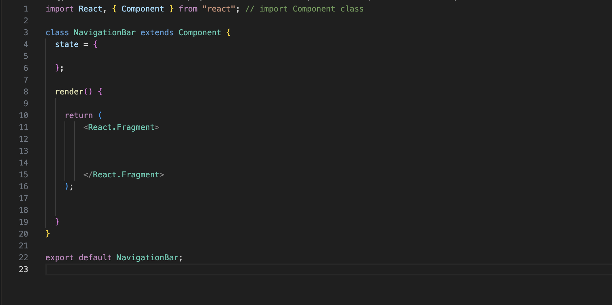

Introduction!
Hello! in this blog i will be going over the why not much of the how, so there will be not a lot of detail on the how of react such as the set up, how it works in depth, what tools are available (functions, tips, tricks). This will explain what react is and why people are so fond of it and my opinons on react so far.
What I thought react was
I first heard about react from my group members in my 2 year programing course, one of my group members did a web application using react. He showed us a polished website and tolled us how much simpler react is compared to base java script or JSTL/JSP/servlets. I thought from what he said it was a seperate language that was used for web development along with its own UI and built in methods/functions.
What react actually is
React is a open source java script library initially developed by facebook specifically a developer named Jordan Walke. Facebook developed react to be a easy and fast way to develop UI and web applications
by using significantly less code compared to base java script. A key consept of react is simplyfying the design of UI and web apps into managable pices that can be reused.
React is know the lagest JavaScript library used for web and UI development.
Some examples of applications that use react are:
- Spotify
- Discord
- SoundCloud
How does is work?
In react there are things called components we can think of these as blocks of code containing a pice of the web application.
like a navagation bar, a profile section would be another component. In these components there are sub components ex if we go back to
the profile component there would be a picture component and a details component that both control the look, interactivity, and changes that can be made to them. like
clicking on the profile picture to bring up a larger image or expand the about me paragraph in the details component.
This can be viewed as each component having a hierarchy like a sub class in java you have the super class and the sub classes in this case the superclass is the profile component and the sub classes
are the picture component and the details component.
To further hammer this home i personally like to imagine each part of a web app as its own block and each block has a diferent color almost like lego.
This also shows how react is reusable with these blocks of components we can take them and add the blocks to different applications, we can take a nav bar and plug it into another app
and we would just need the component file we do not need the html and the css files along with the java script files to try and fit it into another application.
It is not seemless and im sure it takes some light modifying but even so it is much much simpler than the ladder option.
Ide like to chow you a image of a component in visual studio code

Above is a standard react component ive set this component to NavagationBar the class and extends principles are the same as in java.
the state object is where we can store our relevant data similar to variables in java. This object can then be called the same way in java using . but think of it as calling an
objects fields/variables that are not set to private so you are calling them directly.
Ex - if we have age in the state object age: 20 then if we call state.age we will get 20, this applies for arrays and other types of data.
moving on the render method we see does exsactly what you think it does it will render all the data to the web page, specifically all the data in between the React.Fragment tags
i use these tags because they are more efficient but you can also use and view them as div tags.
then finally at the bottom we have the exsport default NavigationBar; this exports our class to somthing called the root div in our base html file.
We will go into this root dive in blog 2, for know this will give you an idea of what a component is.
How is react better than other tools?
From what ive seen and reserched react seems to be "better" all techlology is a little subjective in my opinion but from what i gather
The reason react is looked at with a lot of positivity is its re-usability and flexibility. Developer teams are not to fond of rigid rules and ristrictions so react not
having strict rules for code convetions or file organization means teams that use react are free to set there own standards for code as well as freedom to use react however they want to.
But going back to the component part of react another common reason developers like react more than other tools is that you can brake UI elements into blocks
and then update one part of the UI as needed. However there is another plus to this block like way of developing a web application, what if there is a bug or error?
if the error is coming from the navagation bar for example then a developer can simply access the navagation component and take a look at that portion of the application.
The ease of use cannot be overstated you do not need to find each part of the navagation bar in the html, the styling of the navagation bar and the scripts for the interactive elements of the navagation bar
you can just look at the navagation component and everything will be there. This being said naturally the complexity of the bug has to be taken into account a wonderful bug that only effects one portion of the application is
not super realistic however even in the likley outcome of a bug effecting multiple components there is still the relative ease of finding out where this root bug is due to this
built in organisation of the react application.
Developers can use react for a simple button or for an entire application its up to the developer. In addition to this you can integrate components into an exsisting web application
to do this however you will need a content dilivery network (CDN) a bunch or servers that are all linked together. Ill have to dig into this aspect of react further since my knowlage of it is surface level at the moment of writing.
Community is another reason why react is more enticing to new developers, there is a very large community around react that take part in questions/answers and tutorials for new and veteran developers.
My thoughts on react so far
In my short experience with react so far i found the whole consept of it very easy to understand for example components everything clicked when i viewed components as blocks on a UI or web page. The way that every component for the web page is in a nice file and that there is only one location for all your styling, functionality for a feature or component is very nice but also a little new, my main language is java and as you know there is classes and additional files for exceptions , iterators so with react being so organized for lack of a better word i found myself overthinking and trying to make sure i didnt have to make a new file or make a seperate class with an object to allow me to do somthing in react. The logic is very much the same if it makes sense you can do it but the key i feel to really learn react is to remember what you can do in each area. For example in java its more focused on the syntax but less on the location, you can put variables outside methods or below them you can have static methods/variables where ever but in react there are locations where things are rendered or where your variables are
My plan moving forward with react
My plan moving forward with react is to build a webpage but focus more on the interactivity and visual aspects of a webpage. The previous web pages ive developed have been very simple and frankly ugly so i would like to see if with react i can create more satisfying interactivity (like animations) and a more professional look. I then want to compare the experience with my previous works in blog 2 to give you the reader a good and honest opinion on react.